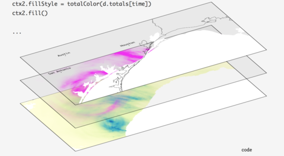
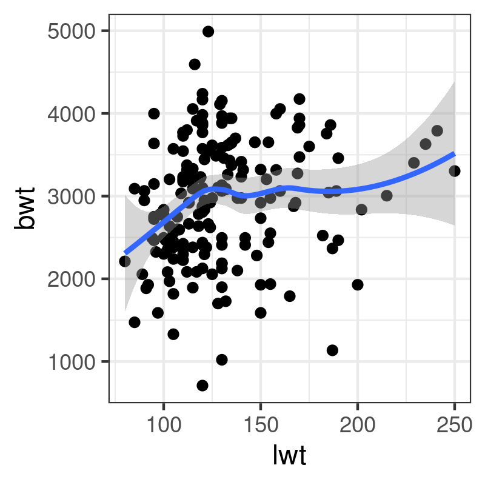

Managing graphics with R
R offers two main graphical systems: base and grid. The latter is exposed in two core packages: lattice and ggplot2. We will use the later, which relies on the idea of a "Grammar of Graphics" [1].
suppressPackageStartupMessages(library(ggplot2)) theme_set(theme_bw())
The above instructions allow to load the required package and to set a default theme. They are meant to be run only once, when R is started for the current session. However, it is still possible to change the theme at any time, or inline when building a custom graphical display.
Let's look at a random sample of the GSOEP dataset available in data/gsoep09.dta. This is a Stata file built upon the German Socio Economic Survey from 2009. Note that these data come with survey weights (dweight and xweights) but we will proceed as if it was a cross-sectional sample. The foreign package allows to read Stata files (up to Stata 12 version), but it is more convenient to use the haven package. The read_dta function will return a "tibble", which is like an ordinary data frame but with extra properties that we won't exploit in this tutorial.
library(haven)
d <- read_dta("data/gsoep09.dta")
head(as.data.frame(d))
persnr hhnr2009 state ybirth sex mar edu yedu voc emp egp income hhinc hhsize hhsize0to14
1 8501 85 5 1932 1 1 1 10.0 1 5 18 NA 22093 2 0
2 8502 85 5 1939 2 1 1 8.7 NA(b) 5 18 NA 22093 2 0
3 15001 150 5 1946 1 1 1 10.0 1 5 18 0 62078 2 0
4 15002 150 5 1953 2 1 1 10.0 1 2 2 19955 62078 2 0
5 18201 111373 12 1969 1 4 2 12.0 2 1 4 35498 24578 1 0
6 18202 182 12 1946 2 1 4 15.0 2 5 18 NA 33401 2 0
rel2head ymove ybuild condit dsat size seval rooms renttype rent reval eqphea eqpter eqpbas
1 1 1976 4 1 9 2046 4 10 1 NA NA(a) 1 1 1
2 2 1976 4 1 9 2045 4 10 1 NA NA(a) 1 1 1
3 1 1972 4 1 8 907 3 3 2 508 NA(a) 1 1 1
4 2 1972 4 1 9 900 3 3 2 530 NA(a) 1 1 1
5 1 2002 NA(a) 1 9 1292 3 4 1 NA NA(a) 1 2 1
6 1 2002 NA(a) 1 8 866 3 3 1 NA NA(a) 1 2 1
eqpgar eqpalm eqpsol eqpair eqplif eqpnrj hhtyp area1 area2 dvisits heval hsat polint pia pib
1 1 2 2 1 2 1 2 2 1 20 5 2 1 1 5
2 1 2 2 1 2 1 2 2 1 24 4 2 3 1 5
3 1 2 2 2 2 2 2 4 2 12 3 5 3 1 NA
4 1 2 2 2 2 2 2 4 2 8 2 6 3 1 1
5 2 2 2 2 2 2 1 1 1 12 2 8 4 2 NA
6 2 2 2 2 2 2 2 1 1 12 3 7 4 2 NA
pic lsat wor01 wor02 wor03 wor04 wor05 wor06 wor07 wor08 wor09 wor10 wor11 wor12 sample intnr
1 1 8 1 2 1 1 1 1 2 1 1 3 1 NA(b) 6 18
2 2 8 1 2 1 1 1 1 2 1 1 3 1 NA(b) 6 18
3 NA(b) 8 2 2 2 1 2 2 2 2 1 2 2 NA(b) 1 40
4 3 8 1 2 2 2 2 2 2 2 2 2 2 3 1 40
5 NA(b) 7 2 2 2 2 2 2 2 1 2 1 2 1 3 60
6 NA(b) 6 1 1 1 1 1 2 1 1 1 1 1 NA(b) 3 60
hhnr strata psu dweight xweights
1 85 601 601367 13569.429 5808.710
2 85 601 601367 13569.429 5283.054
3 150 101 101190 12894.620 11958.257
4 150 101 101190 12894.620 12114.272
5 182 301 301021 7326.489 4709.853
6 182 301 301021 7326.489 4929.223
1 Data preprocessing
We will first subset the data frame by selecting only a dozen of variables, and then draw a random sample of 10% of the original dataset. Specifically, the variables we are interested in are described below:
persnr: respondant IDhhnr2009: household IDybirth: year of birthsex: sex of respondantmar: marital statusegp: socio-economic classyedu: no. years of educationincome: annual income (€)rel2head: position of respondant relative to householdwor01towor12: 3-point Likert answers to socio-economic and political questions
vars <- c("persnr", "hhnr2009", "ybirth", "sex", "mar", "egp", "yedu", "income", "rel2head",
"wor01", "wor02", "wor03", "wor04", "wor05", "wor06", "wor07", "wor08", "wor09", "wor10", "wor11", "wor12")
set.seed(101)
idx <- sample(1:nrow(d), floor(nrow(d)*.1))
d <- subset(d[idx, ], select = vars)
dim(d)
[1] 541 21
The next step consists in re-encoding categorical variables and computing auxiliary variables:
d$persnr <- factor(d$persnr) d$hhnr2009 <- factor(d$hhnr2009) d$sex <- droplevels(as_factor(d$sex)) d$mar <- droplevels(as_factor(d$mar)) d$egp <- droplevels(as_factor(d$egp)) d$rel2head <- droplevels(as_factor(d$rel2head)) d$age <- 2009 - d$ybirth
Let us now look at the above variables, and recode some of mar and egp categories: (For simplicity, we will discard all refusals from the present dataset.)
table(d$mar) levels(d$mar)[3:5] <- "Single" d$mar[d$mar == "Refusal"] <- NA d$mar <- droplevels(d$mar) table(d$mar)
Married Single Widowed Divorced Separated
293 143 50 43 12
Married Single
293 248
table(d$egp) levels(d$egp)[1:2] <- "High" levels(d$egp)[2:4] <- "Mid" levels(d$egp)[3:4] <- "Low" levels(d$egp)[4:6] <- "None" d$egp[d$egp == "Refusal"] <- NA d$egp <- droplevels(d$egp) table(d$egp)
Service class 1 Service class 2
36 72
Higher routine non-manuals Lower routine non-manuals
29 33
Self-Employed Skilled manual workers
25 40
Semi- and unskilled manual workers unemployed
60 27
Retired Does not apply
154 62
Refusal
3
High Mid Low None
108 87 100 243
Finally, let us only keep individuals with available income, and no missing value on mar or egp:
d <- subset(d, income > 0 & !is.na(mar) & !is.na(egp)) d$logincome <- log(d$income) dim(d)
[1] 336 23
2 The ggplot philosophy
In the spirit of the Grammar of Graphics developped by Leland Wilkinson, the ggplot2 library uses a system of layers where graphical elements are joined altogether in a coherent way.

Figure 1: The Grammar of Graphics principles
The following elements are usually found, in more or less the following order:
ggplot(): a data frame (data=) together with a mapping (aes())geom_*(): one or more geometrical objectsfacet_wrap(): a system of facets (used for conditioning on additional variables)scale_*_*(): a custom scale for each axis and color schemescoord_*(): a coordinate systemlabs(): some annotations for axes and other graphical propertiestheme_*(): a custom theme
Basically, we start by indicating the data frame in which the variables can be found (data =), and what role these variables play in the plot (aes(x, y=, color=)=). Two numerical variables can be used to code the spatial location of a point in a 2D space, while a categorical variable could be used to highligtht those points using color values mapped onto variable levels. The type of graphical object we wan to draw (geom_point(), geom_histogram()) depends on the number and the type of variables available in the aes() mapping. If there's only one numeric variable, we cannot draw a scatterplot, of course, but we can build an histogram, for example. Note that a single plot can contain multiple geometrical object, e.g. a scatterplot and a scatterplot smoother (lowess curve). Each plot can be customized in several ways, but most of the time we may be interested in updating the axes or the object properties (e.g., scale_x_continuous(), scale_color_manual()), and the labels or the title/subtitle (labs()).
The most up to date documentation is available on-line in Winston Chang's R Graphics Cookbook [2].
2.1 Illustration of the layered approach
A very basic plot can be thought of as a succession of layers. In the example below, we first draw a scatterplot using variable lwt (on the x-axis) and bwt (on the y-axis) from the MASS::birthwt dataset, and then add a scatterplot smoother (a lowess curve, with default smoothing parameters) on top of the scatterplot:
p <- ggplot() +
layer(data = MASS::birthwt,
stat = "identity",
geom = "point",
mapping = aes(x = lwt, y = bwt),
position = "identity") +
layer(data = MASS::birthwt,
stat = "smooth",
geom = "line",
mapping = aes(x = lwt, y = bwt),
position = "identity",
params = list(method = "auto"))
Here is the simplified version using the approach described above:
library(MASS) p <- ggplot(data = birthwt, aes(x = lwt, y = bwt)) p + geom_point() + geom_smooth(method = "auto")

This follows the same principled approach: You add each graphical piece together using the + operateur – which is specific to ggplot2 – and you print the final graphical object to the graphical device. This is the reason why we don't use any assignment operateur (<-) in the last expression. It would be possible to write the following expression:
ggplot(data = birthwt, aes(x = lwt, y = bwt)) + geom_point() + geom_smooth(method = "auto")
However, it is better practice to save the graphical commands in a variable, and even to accumulate (+) the instructions as they go along since this allows to build the final plot in an incremental way.
3 Exploratory analysis
3.1 Histogram and density estimators
Histogram and density curve are two common estimators for the distribution of a continuous random variable. They do indeed have their counterparts in ggplot2, namely geom_histogram and geom_density, although in the latter case it is also possible to use geom_line using the a density estimator that ggplot2 will compute for us. Here are two examples of use: